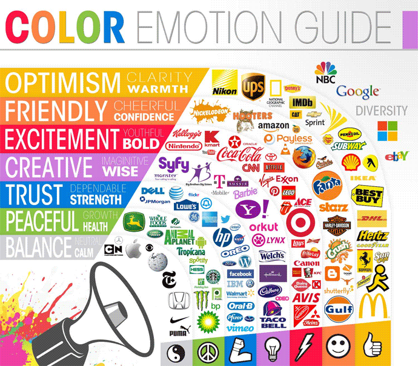
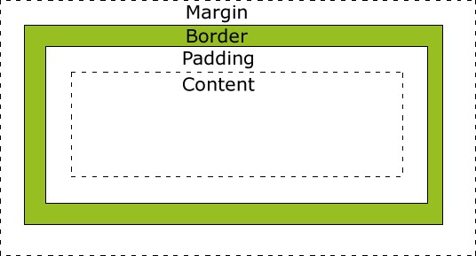
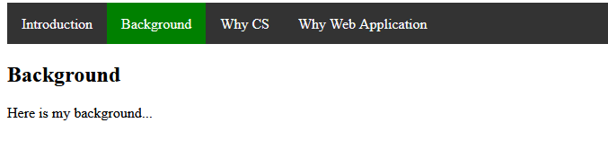

Design
CSS Colors
- Here are some common ways you can define a color:
- Names: https://www.w3schools.com/colors/colors_names.asp
- Hex number: https://developer.mozilla.org/en-US/docs/Web/CSS/CSS_Colors/Color_picker_tool
- #000 black
- #ffffff white
- RGB: (Red, Green, Blue)
- RGBA (red, green, blue, alpha)
- HSLA (Hue, Saturation, Light, and Opacity)
- Example 08
Which Colors You should Use
- Psychology: some colors mean optimism and some mean trust… 
-
Figure Credit: https://creativemarket.com/blog/color-combination-tips
- How to choose theme colors:
- https://coolors.co, free and provide you some suggestions.
- http://paletton.com, design examples provided by the website>
- Some tips on color choosing
What is the effect of yellow and purple?
- Purple is used for creative and imaginative projects where wisdom is needed. Yahoo uses purple.
- Yellow is associated with feelings of warmth, clarity and optimism.
- Yellow and Purple: grab attention.
CSS examples: Horizontal Navigation Bar
- Example 09
- HTML tag:
- ul: defines an unordered list
- li: defines a list item
- CSS margin vs border vs padding:
- They all generates space around an element.
- Positions are different.
- Class active: indicates the active page or link, the page or link you are in
- 
- Figure credit: https://stackoverflow.com/questions/2189452/when-to-use-margin-vs-padding-in-css
Group Activity 1: 5 minutes
- Work on Example 09
- Highlight current selected page with color green in the navigation bar
- Hover color changed to: lawngreen (hint: li a:hover)

CSS examples: Vertical Navigation Bar
- Example 10
- Question: how to avoid repeated navigation bar code? We will learn it when we introduce Jinjia2
- .active vs .hover:
- Active: current website you are in
- Hover: when your mouse cursor is located at current position
Homework 2
- Add a navigation bar to your current personal website
- At least two pages should be functional (e.g. introduction and background)
- You may split your original contents into two parts
- Apply your theme colors
- Due Feb. 22
| Index | Prev | Next |